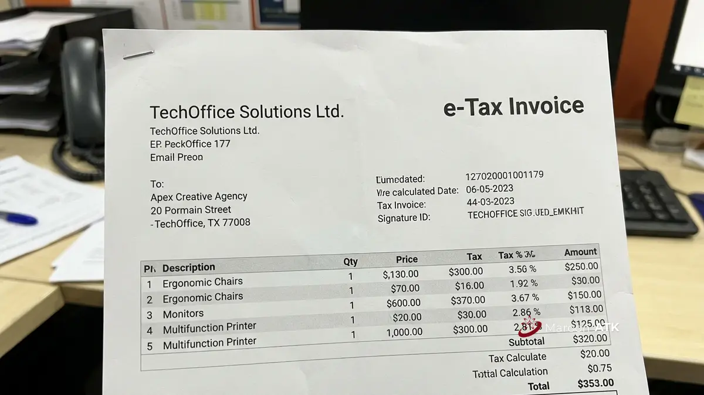

Mengapa Legalitas Supplier Alat Kantor Jakarta Penting bagi Procurement?
Legalitas supplier alat kantor Jakarta sangat penting bagi procurement karena menjadi dasar keabsahan dokumen keuangan yang digunakan saat proses audit internal maupun eksternal instansi.
Procurement officer yang bekerja di lingkungan pemerintahan maupun korporasi besar umumnya wajib memastikan setiap transaksi dapat dipertanggungjawabkan secara hukum. Supplier dengan legalitas usaha yang jelas, seperti kesesuaian antara NIB (Nomor Induk Berusaha), NPWP, Akta Perusahaan, Surat Pengukuhan Pengusaha Kena Pajak (SPPKP), hingga rekening bank atas nama badan usaha, memudahkan proses verifikasi serta mitigasi risiko hukum.
Validasi profil hukum calon penyedia juga dapat ditelusuri melalui layanan resmi Ditjen AHU Online Kemenkumham untuk memastikan status badan hukum PT atau CV tersebut masih aktif dan tidak dalam sengketa kepengurusan.

SOP Pengadaan ATK Kantor Swasta: Alur Pembelian dan Pembayaran Tempo
Standardisasi alur purchase requisition, penyeleksian vendor resmi, dan mekanisme 3-way matching.
Bagaimana Kepatuhan Administrasi dan Perpajakan Supplier ATK Diukur?
Kepatuhan administrasi dan perpajakan supplier ATK diukur dari kelengkapan dokumen Purchase Order, Surat Jalan, Invoice, Berita Acara Serah Terima (BAST), dan e-Faktur Pajak sebesar 11 persen.
Kelima dokumen administrasi ini membentuk rantai pertanggungjawaban transaksi yang solid untuk mendukung laporan pertanggungjawaban keuangan perusahaan (LPJ) maupun audit BPK dan KAP independen.
Untuk pengadaan yang melibatkan instansi pemerintah, kepatuhan terhadap regulasi juga menjadi acuan tambahan yang perlu diperhatikan procurement officer saat menyeleksi calon supplier. Peraturan Presiden Nomor 46 Tahun 2025 mengatur perubahan kedua atas Peraturan Presiden Nomor 16 Tahun 2018 tentang Pengadaan Barang/Jasa Pemerintah dan telah berlaku sejak 30 April 2025 sebagai landasan hukum tata kelola pengadaan barang dan jasa nasional.

Contoh e-Faktur Pajak dari supplier alat kantor untuk kebutuhan pelaporan instansi dan kelancaran rekonsiliasi PPN perusahaan.
Apa Ciri Penawaran Harga Supplier ATK yang Transparan?
Penawaran harga supplier ATK yang transparan mencantumkan merek, tipe, dan asal produk secara rinci sehingga tidak menimbulkan biaya tersembunyi di kemudian hari.
Supplier yang transparan tidak akan menjebak klien dengan Total Cost of Ownership yang membengkak setelah kesepakatan tercapai, dan idealnya dijamin secara tertulis tidak akan mengganti spesifikasi material atau merek tanpa persetujuan resmi dari pihak pembeli. Kejelasan ini penting terutama untuk pengadaan dalam jumlah besar yang melibatkan banyak item ATK sekaligus seperti kertas HVS, ordner, map gantung, pulpen gel, toner cartridge, hingga perangkat peripheral kantor.
Bagaimana Layanan Purnajual Supplier Alat Kantor yang Baik?
Layanan purnajual supplier alat kantor yang baik ditandai dengan adanya Person in Charge khusus, kejelasan Service Level Agreement garansi, dan tanggung jawab penuh atas penanganan barang hingga ke lokasi kerja.
Kehadiran PIC khusus memudahkan komunikasi ketika terjadi kendala pengiriman atau kebutuhan tambahan mendadak. SLA garansi resmi memberi kepastian waktu penanganan jika terjadi kerusakan produk, sementara tanggung jawab distribusi mencakup proses bongkar muat hingga penataan di lantai kerja apabila diperlukan, sehingga tim internal kantor tidak perlu menangani sendiri proses teknis tersebut.
Bagaimana Perbandingan Kebutuhan Supplier Alat Kantor di 5 Kota Besar Indonesia?
Kebutuhan supplier alat kantor berbeda-beda di setiap kota besar Indonesia, mulai dari instansi pemerintah di Jakarta, kawasan industri di Surabaya, institusi pendidikan di Malang, sektor pariwisata di Denpasar, hingga peran distribusi Makassar untuk Indonesia Timur:
| Kota | Segmen Pelanggan Utama | Karakteristik Permintaan | Kebutuhan Utama dari Supplier |
|---|---|---|---|
| Jakarta | Instansi pemerintah pusat dan perusahaan swasta skala besar | Permintaan tertinggi; volume pengadaan besar dengan siklus pemesanan sering, terutama menjelang penutupan anggaran tahunan | Pengiriman cepat, dokumen pajak lengkap untuk audit rutin, dan gudang dengan stok memadai agar mampu memenuhi permintaan mendadak tanpa keterlambatan, mengingat tenggat administrasi di ibu kota yang ketat |
| Surabaya | Instansi dan perusahaan di kota Surabaya maupun luar pusat kota | Sebagai kota terbesar kedua di Indonesia, menjadi hub distribusi ATK untuk wilayah Jawa Timur yang lebih luas; ada pesanan rutin bulanan untuk kebutuhan operasional harian | Perhitungan biaya dan waktu kirim antar pulau yang akurat, serta estimasi waktu kirim yang jelas |
| Malang | Kampus dan sekolah (institusi akademik) | Kota pendidikan dengan pola pemesanan musiman mengikuti siklus tahun ajaran, terutama menjelang semester baru | Pemahaman terhadap pola pemesanan musiman agar stok alat tulis dapat disiapkan sesuai periode kebutuhan kampus dan sekolah |
| Denpasar | Instansi pemerintah daerah serta sektor swasta pariwisata dan perhotelan (hotel dan resor) | Kebutuhan didominasi karakteristik industri pariwisata; pasokan rutin untuk administrasi operasional | Ketersediaan stok lokal sebagai nilai tambah, mengingat jarak pengiriman dari luar Bali memengaruhi waktu tunggu pesanan |
| Makassar | Instansi dan perusahaan di wilayah Indonesia Timur | Berperan sebagai pusat distribusi dan titik konsolidasi pengiriman sebelum didistribusikan ke kota-kota sekitarnya | Jaringan logistik yang mampu menjangkau area lebih luas tanpa mengorbankan kecepatan dan kelengkapan dokumen pengiriman |
Memahami perbedaan kebutuhan di atas, MAROON ATK hadir sebagai supplier alat kantor yang siap menyesuaikan layanan pengiriman, ketersediaan stok, dan kelengkapan dokumen sesuai karakteristik wilayah Anda. Hubungi tim kami untuk mendapatkan penawaran khusus sesuai kebutuhan pengadaan di kota Anda.
Pilih Supplier ATK Kantor yang Mendukung Kebutuhan Pengadaan
Memilih supplier ATK untuk kebutuhan perusahaan tidak cukup hanya dengan melihat harga penawaran. Kesesuaian produk, kelengkapan administrasi, hingga kemampuan supplier memenuhi kebutuhan pengadaan perlu menjadi pertimbangan sebelum melakukan pemesanan.
Selain kebutuhan alat tulis kantor, perusahaan yang sedang menyiapkan ruang kerja juga dapat mempertimbangkan pilihan material dan desain melalui panduan custom furniture kantor. Sementara itu, informasi mengenai proses dan layanan pengadaan furniture dapat dipelajari melalui panduan pengadaan furniture kantor.
Untuk kebutuhan ATK, MAROON ATK menyediakan berbagai pilihan alat tulis dan perlengkapan kantor untuk mendukung kebutuhan operasional perusahaan. Anda dapat melihat pilihan produk melalui katalog ATK MAROON ATK atau mengenal lebih jauh layanan dan profil perusahaan melalui halaman tentang kami.
Verifikasi Dokumen & Penawaran Resmi Alat Kantor
Konsultasikan daftar kebutuhan ATK kantor Anda, dapatkan Surat Penawaran Harga resmi dengan e-Faktur Pajak lengkap, serta skema pembayaran tempo B2B bersama tim MAROON ATK.
Pertanyaan yang Sering Diajukan
Legalitas supplier dapat dicek melalui kesesuaian dokumen NIB, NPWP, Akta Perusahaan, dan SPPKP, serta validasi profil perusahaan di layanan resmi Ditjen AHU Online Kemenkumham.
Dokumen wajib meliputi Purchase Order, Surat Jalan, Invoice, Berita Acara Serah Terima, dan e-Faktur Pajak agar dapat digunakan untuk pelaporan keuangan dan audit internal.
Ya, biaya dapat berbeda karena faktor pengiriman, ketersediaan gudang regional, dan skala kebutuhan instansi di masing-masing kota seperti Jakarta, Surabaya, Malang, Denpasar, dan Makassar.
Bandingkan penawaran berdasarkan kesesuaian merek dan tipe barang, kelengkapan status pajak, kejelasan Total Cost of Ownership, serta kelengkapan dokumen legal yang menyertai setiap penawaran, bukan hanya angka harga akhir.

Asher Angelica
Praktisi procurement dan konsultasi interior korporat yang berfokus pada standarisasi material ramah lingkungan (ESG), efisiensi tata ruang kantor, dan tata kelola pengadaan fasilitas B2B di Indonesia.